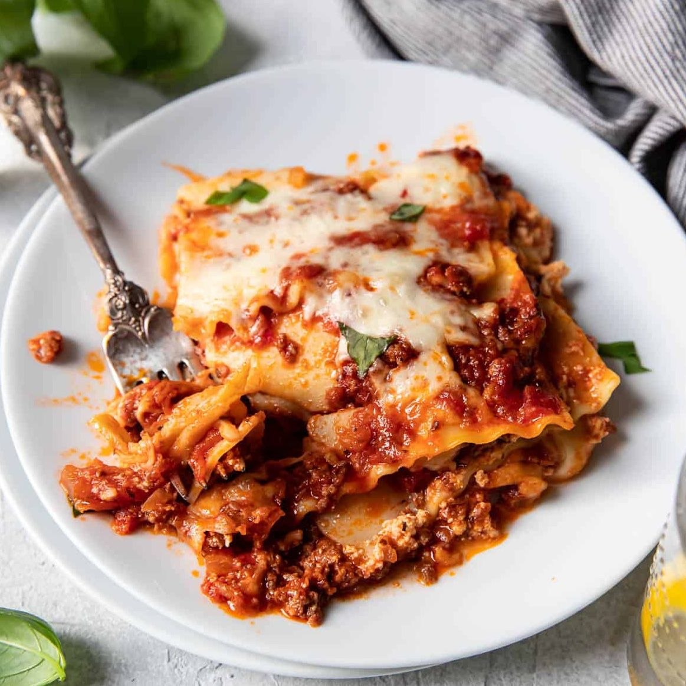

Lasagna: The Polish Perspective

Description
Have you ever seen the ingredients on those frozen
blocks of lasagna? Nobody needs to have soy sauce in
an italian dish. Making it yourself is quite easy and
being in control of what's actually inside makes it
taste less like plastic and tomato paste. A surprising
amount of flavor can be injected when you make it yourself.
Now cooking is different from baking in that you don't
require an actual recipe. But here is a Polish perspective
on the matter. This recipe will pack a protein punch and
other ingredients that will make it "look" like lasagna.
Ingredients
- 1 pound ground pork
- 1 pound ground beef
- Jar of marinara sauce
- 16 oz cottage cheese
- 2 eggs
- 1 pound mozzarella cheese
- box of lasagna noodles
- 4 teaspoons salt
- teaspoon butter
Steps
- Boil lasagna to just before al dente
- Add salt to beef and pork and cook in pan until browned
- Pre-heat oven to 350F
- Add marinara sauce to cook meat and let it simmer for 10 minutes
- Grate cheese and mix into a bowl with cottage cheese and 2 eggs
- Butter a glass baking dish for lasagna
- Layer lasagna
- noodle
- meat sauce
- cottage cheese mix
- noodle
- meat sauce
- cottage cheese mix
- noodle
- meat sauce
- cottage cheese mix
- noodle
- top the top of the noodle layer with some meat sauce and cheese
- Toss it in the oven for 90 minutes
- Let it cool for 10 minutes and square it up with a knife